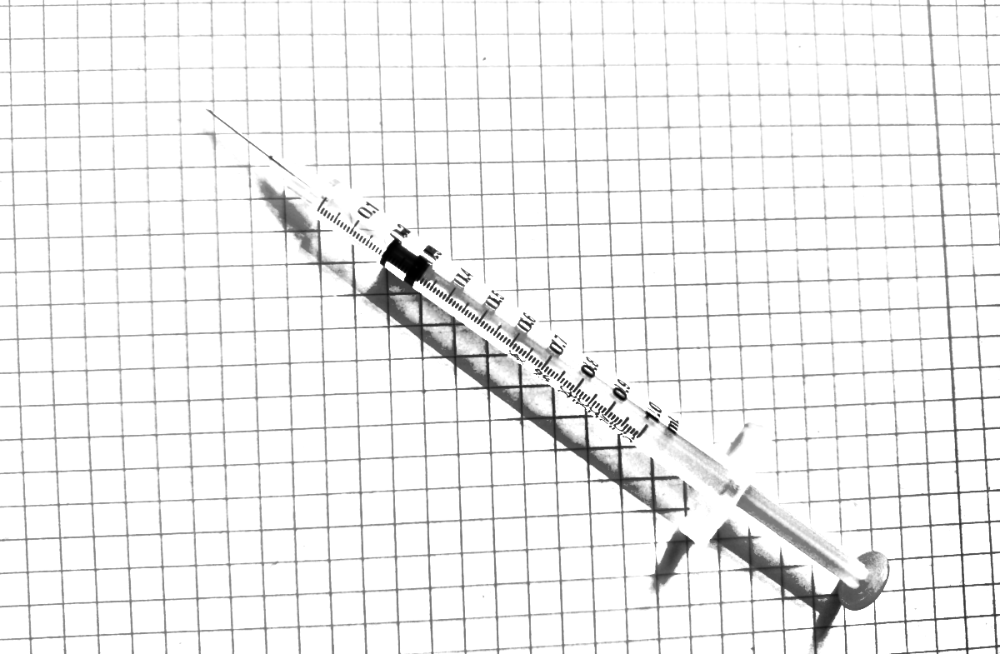
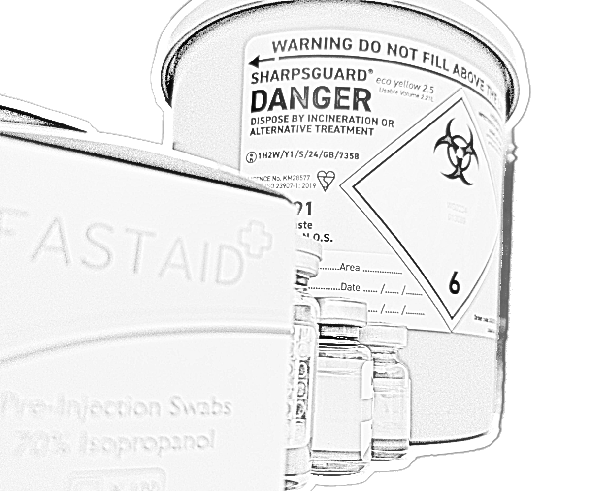
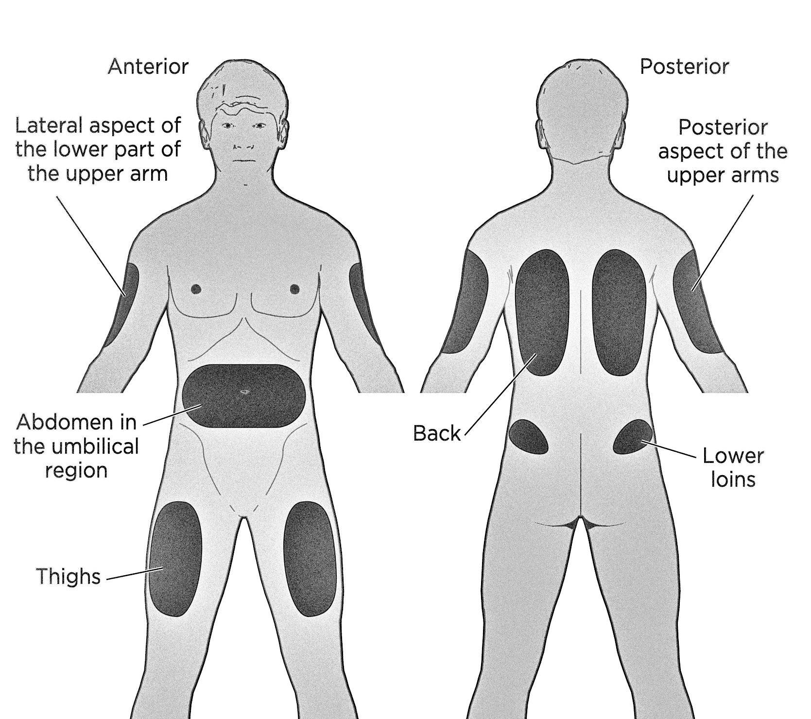
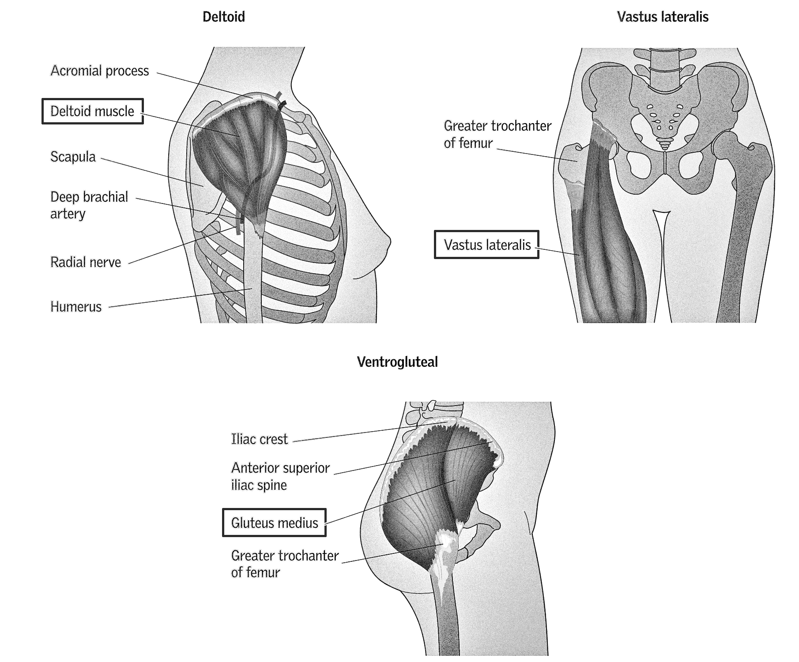

[printable PDF version] (print two-sided on short edge)

Some trans people decide that because of long waiting times for treatment, they would rather give themselves hormones from a non-pharmaceutical source than wait several years to start medically transitioning. This zine is not a guide on how to acquire them, but on how to safely inject them, and is applicable to oestrogen, testosterone, and other similar things that come in vials.
Disclaimer: This is not written by a medical professional. You must do your own research on the relevant risks. The author takes no responsibility for what you choose to do with your body or unexpected / unwelcome side effects.

This zine is free to reprint and redistribute. You can translate, update and add local information. If you sell physical copies, donate any profits to mutual aid. This online version must always remain free.
Getting needles from a trustworthy source is a good idea; exchangesupplies.org and in-person needle exchanges are good. Other sites exist too.
To draw from your vial, you will need to use a needle that is 23G or smaller (bigger number = smaller gauge, 18G will wreck it). This avoids damaging the stopper, which if broken will allow bacteria to get inside of the vial! Before drawing, wipe the top of the vial with a 70% isopropyl alcohol wipe. Never use anything else: not sanitiser, no other alcohol percentage. It is better to use nothing than an alternative. You do not need to use a wipe on your skin; this can cause irritation. If your skin is free of dirt you will be okay.
If your vial has a circle on the top of the stopper, poke it in the circle; if not then anywhere near the centre is ok. Do your best to use different places on the stopper each time, and poke it at a 90 degree angle (right angle).
Dispose of the needle in a sharps bin. Sometimes councils will pick them up when they are full, or you will need to find a place nearby to dispose them (such as a needle exchange).
Before drawing from your vial, draw air into your syringe that is equal to your dose; if you’re injecting 0.1 mL, then draw 0.1 mL of air into your syringe, put the needle into the vial, push in the air and then draw your dose. This means you don’t create a vacuum inside the vial, which makes it easier to draw.
Never reuse a needle/syringe you or someone else has used and never try to wash out one to reuse it. Do not keep medication inside of a syringe for longer than an hour; they are not sterile beyond that timeframe, and they are not made for storing medication. A needle should only touch the vial stopper and your skin.
If you have been pricked by somebody else’s needle, encourage bleeding from the site by squeezing it and get to A&E or dial 111. Needle sticking is an extremely easy way to spread blood borne diseases (such as HIV).
This depends on whether you are doing IM or subq. For both you will need a syringe with the capacity of 1 mL at maximum. (If you inject less than 0.1 mL it is ideal to use smaller syringes such as 0.5 mL or 0.3 mL.)
For subq it is easiest to use a low deadspace fixed needle syringe, (i.e. needle and syringe are 1 combined object). Unisharp fixed needles are ideal; 27G and 29G are easy to find.
For IM currently the only seller of appropriate fixed needle syringes is exchangesupplies. If you do not buy from them you will likely need separate needles and syringes. There are tutorials online of how to put a needle onto a syringe.
If you are using separate needles and syringes, you need to ‘clear the deadspace’, after drawing your dose. Deadspace is the space in your needle (the hub) that the plunger cannot push medication out of. If you replace your needle without clearing it, you lose the oil in the drawing needle when swapping, and some of your dose inside the syringe will fill the injection needle’s deadspace instead of going inside of you.
Using 0.1 mL as an example, after drawing your dose and taking your needle out of the vial, you will need to draw back the plunger to draw the liquid inside the needle out of it and into the syringe. Now you have 0.1 mL + deadspace + air inside the syringe. Then detach the drawing needle and add the injection needle, then carefully push up the plunger until a tiny drop leaves the top of the needle. The plunger is now at your dose of 0.1 mL, with the deadspace inside the injection needle, and you can inject knowing you have the right dose.
Using any gauge mentioned will work, but if your vial has a thicker oil (e.g. castor) then using a thicker gauge needle (such as 23G or 25G) will make drawing faster. Thinner needles work fine but they will be slow. You can heat the vial with your body heat to make drawing quicker.
For subq you can use a needle between 27G and 31G that is between 8 mm (3/8ths inch) and 16 mm (5/8ths inch). You can inject at a 45 or 90 degree angle, and pinch the skin + fat to create enough space to put the needle in. If you are getting leaking / bleeding from the site you can leave the needle in for 10 seconds after injecting. Injecting slowly will reduce pain.
Rotate between at least 2 sites (e.g. left thigh and right thigh) every injection, trying to inject in different places each time. If you do not do this you are at risk of depot buildup and scarring will be inevitable.
The abdomen and thighs are the easiest places to self-inject. Stay 2.5 cm away from the belly button.
Subcutaneous injection sites 
A lot of people use subq because they would rather use a smaller needle that requires less preparation. For most formulations there is no difference between IM and subq (this excludes EUn).
For IM you can use a needle between 23G and 27G that is between 1 inch (25 mm) and 1.5 inches (37 mm). Inject at a 90 degree angle.
If you experience leaking from the site, try the Z-track method (there are videos online). Injecting slowly will reduce pain.
Rotate between at least 2 sites (e.g. left thigh and right thigh) every injection, trying to inject in different places each time. If you do not do this you are at risk of depot buildup and scarring will be inevitable.
The vastus lateralis and the ventrogluteal are the easiest places to self-inject.
Intramuscular injection sites 
Some people use IM because they have more than 0.5 mL to inject; or they experience more irritation from injecting subq, and would rather not take an antihistamine to reduce this, or taking one doesn’t help. For most formulations there is no difference between IM and subq (this excludes EUn).
The main symptoms are:
Do not use the vial if it has these symptoms. It is not sterile, and you could get a serious infection.
You must store the vial in a dark place (e.g. in a cupboard / box) ideally away from heat sources (e.g. not on top of a radiator).
The stopper may bulge from pulling on it or rapid temperature changes; try to avoid these risk factors.
This depends on what you’re taking. Note that there is no benefit to basing your starting dose from a baseline blood test.
For Oestradiol Enanthate (EEn) and Oestradiol Cypionate (EC), 4 mg every week can suppress testosterone for the vast majority of transfemmes. For Oestradiol Valerate (EV), 4 mg every 5 days or 5 mg every week. If you do a low dose, you will likely just get breast development and nothing else.
For Testosterone Enanthate (TE or TEn) and Testosterone Cypionate (TC), 50 mg every week is a standard starting dose for transmascs, but if you want to do a low dose you can do 25 mg, and a high dose at 100 mg.
You cannot do a low dose to avoid an effect you don’t like.
These are average starting doses. To know your levels are good for your long-term health, you must have regular blood tests.
Get your blood tested between 4–6 weeks after starting hormones. After this, every 6 to 12 months is fine for standard monotherapy.
Ideally test your hormones at trough, i.e. on the same day you take your hormones, but before you inject.
If you are taking only oestrogen, test E2 (Oestradiol) and T. If you are taking only testosterone, test full blood count (FBC) and T. You can test E2 to confirm menses have stopped but it isn’t necessary. (‘Free oestrogen’ and ‘Free Testosterone’ are the wrong tests. ‘Total Testosterone’ is correct, ‘Total oestrogen’ is wrong.)
For transfemmes taking oestrogen: at trough your E2 should be between 370–740 pmol/L (100–200 pg/mL), and T below 1.8 nmol/L (50 ng/dL).
For transmascs taking testosterone: T should be between 10–25 nmol/L (300–750 ng/dL, lower near trough, higher at peak), FBC in male range.
If you get results in different units, converters for E and T exist online.
If your levels are high or low, change your dosage accordingly, and retest after 4 to 6 weeks.
In the UK it’s cheapest to try and get a GP to do your blood tests for you on the NHS, but this has become much more difficult recently. Sometimes you can ask if you can pay them to do it, but your GP may not agree.
There are a few private clinics who will do the relevant blood tests: Randox, Forth With Life and Medichecks (and others). If you can get to London, cliniQ and 56T will do free blood tests.
With private clinics it’s highly recommended you do an in-clinic test as the at-home / finger prick test devices are often highly inaccurate when it comes to hormone levels.
If you have weird symptoms but your blood test results are fine, ask somebody competent for advice.